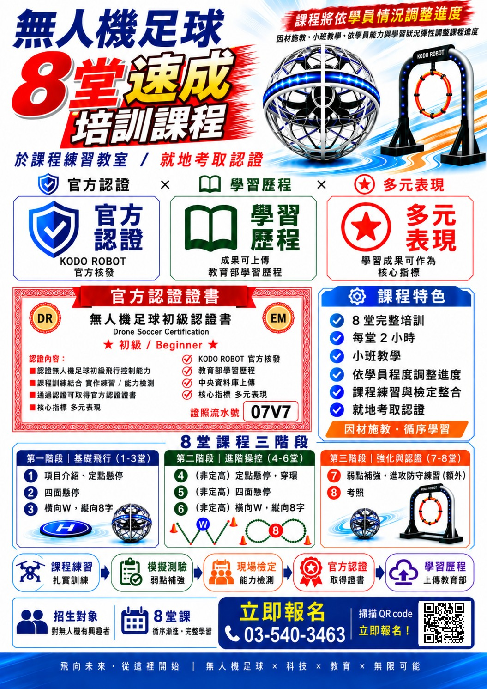
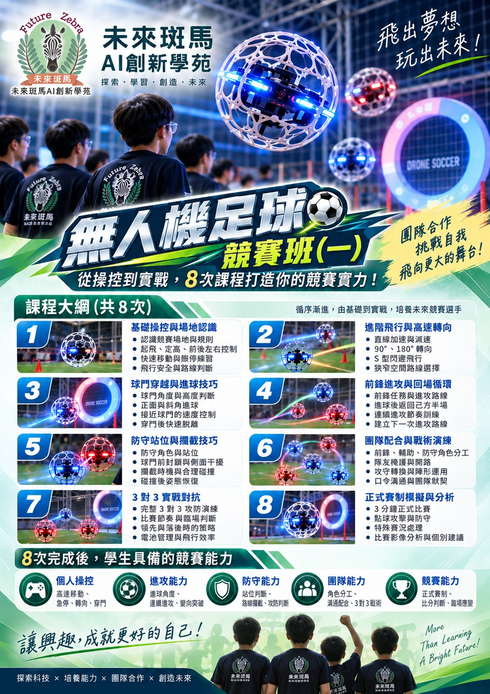
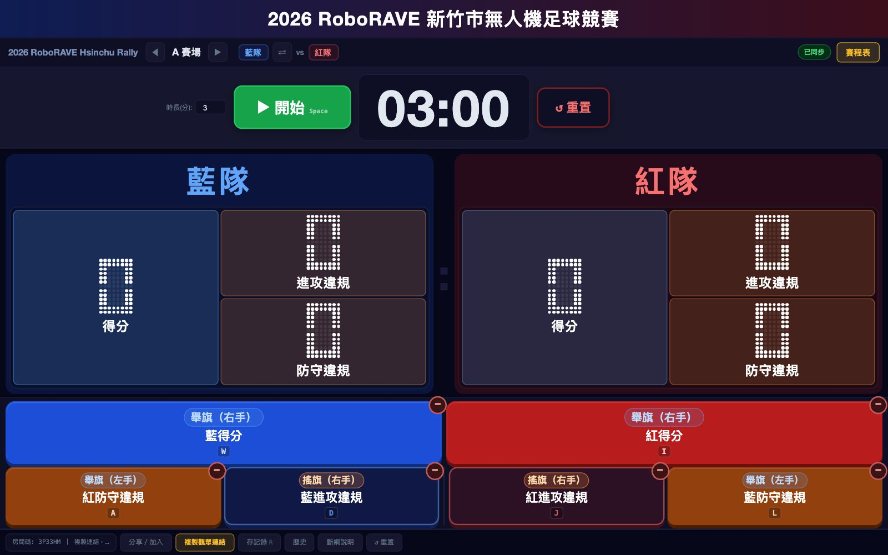

AI 足球無人機課後社團
適合：國小三～六年級、高中
- 學期制，每週一次，每學期約 13–15 堂
- 飛行安全、基礎操控到分組對抗
- 搭配模擬飛行系統，課後持續練習
- 現正開課：民富、竹蓮、香山國小，香山高中、東泰高中
使用球型防撞護罩的足球無人機，室內也能安全飛行。先以 8 堂認證培訓打好操控基礎、就地考照，再進入競賽班學習攻防與團隊戰術，搭配 AI 模擬飛行系統練習，循序漸進。
無人機足球能力認證・初級（Beginner）｜於課程練習教室上課，就地考取認證

點擊放大｜開啟原圖
8 堂課程三階段
認證流程
※ 課程將依學員情況調整進度（因材施教・循序學習）。本認證為 KODO ROBOT 核發之民間無人機足球能力認證，非民航局無人機操作證。
從操控到實戰，8 次課程打造你的競賽實力！循序漸進，由基礎到實戰，培養未來競賽選手。

點擊放大｜開啟原圖
課程大綱（共 8 次）
8 次完成後，學生具備的競賽能力
適合：國小三～六年級、高中
適合：國小 ～ 國中學生
適合：社區活動、樂齡課程、企業與機關
適合：所有無人機課程學員
適合：學校、機關、活動主辦單位
依年齡、經驗與時間，建議合適的課程。
從校園社團、認證課程、AI 訓練工具到國際規則賽事，一步步建立孩子學習無人機足球的完整環境。
支援 1v1、2v2、3v3 線上對戰，學生在不同地方也能一起練習攻守與團隊配合。
AI 自研系統3 對 3 無人機足球賽採 FAI F9A-B 國際規則，分 Mini 飛球組、國小組、國高中組；賽程編排、裁判計分與現場看板全程由本團隊系統運作。
國際規則賽事5 大場景、每個場景 27 關，從基礎操控、航線精準、穿環技術到比賽技能，對應認證課程的基本動作。
AI 自研系統國小：民富國小、竹蓮國小、香山國小（小三至小六）；高中：香山高中、東泰高中。由未來斑馬師資帶領，整學期每週上課。
校園扎根
校園社團涵蓋國小（三～六年級）與高中；8 堂速成認證課程招收國小三年級到國中、對無人機有興趣的學生，零基礎也可以。足球無人機外圍有球型防撞護罩，課程從飛行安全與基礎操控開始，由老師全程帶領。
由 KODO ROBOT 核發的民間無人機足球能力認證。我們的 8 堂速成培訓課程對應初級認證，課程練習與檢定整合，可在上課教室就地考照，成果可上傳教育部學習歷程。此認證為民間能力認證，並非民航局的無人機操作證。
認證課程共 8 堂，著重定點懸停、四面懸停、橫向 W／縱向 8 字等基本操控，並就地考取初級認證；競賽班共 8 次課程，著重高速飛行、進攻與防守、團隊戰術、3 對 3 實戰與正式賽制模擬，培養未來競賽選手。
可以。報名課程的學員會開通我們自主開發的「足球無人機模擬飛行系統」帳號，有闖關模式與連線對戰，孩子在家也能練習操控，上課時更快上手。
歡迎！我們提供校園社團、團體體驗、師資培訓與賽事規劃（含 AI 賽事管理系統）。請來電 03-540-3463 洽詢。